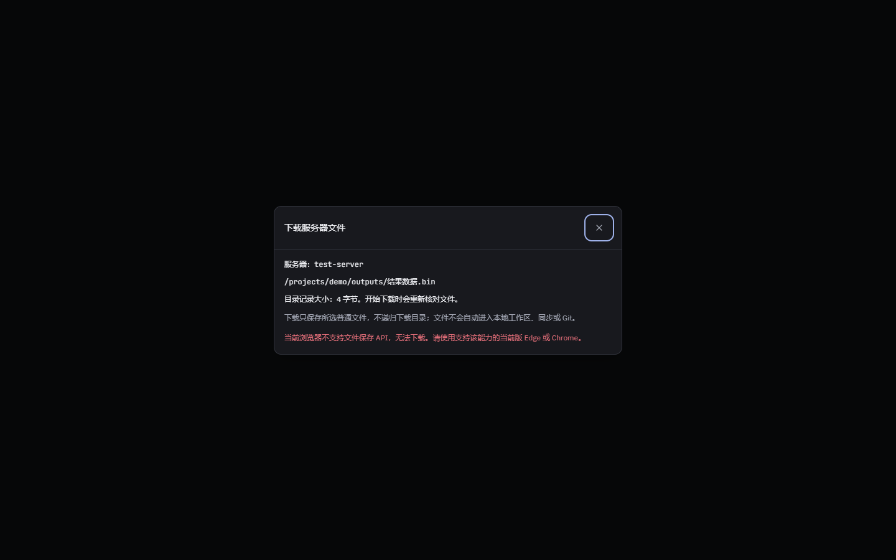
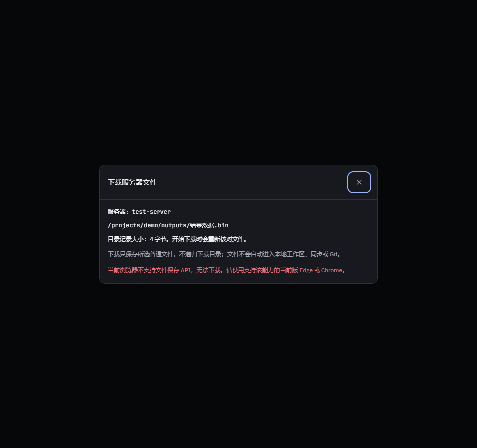
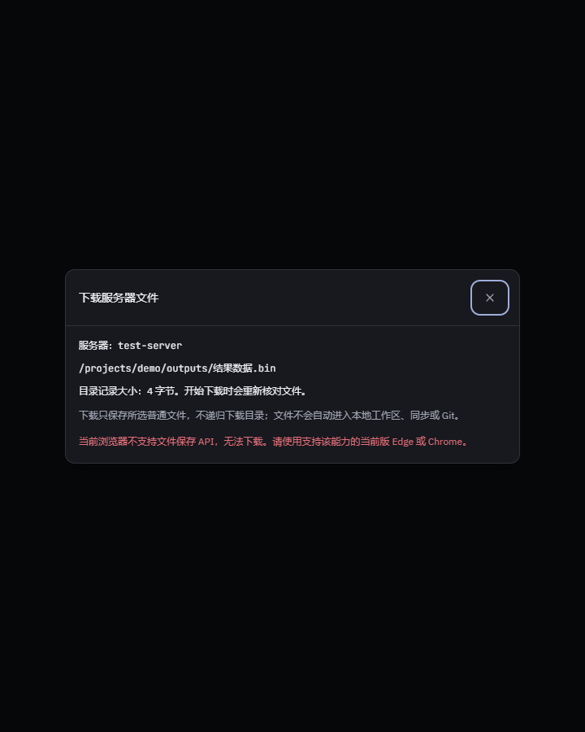
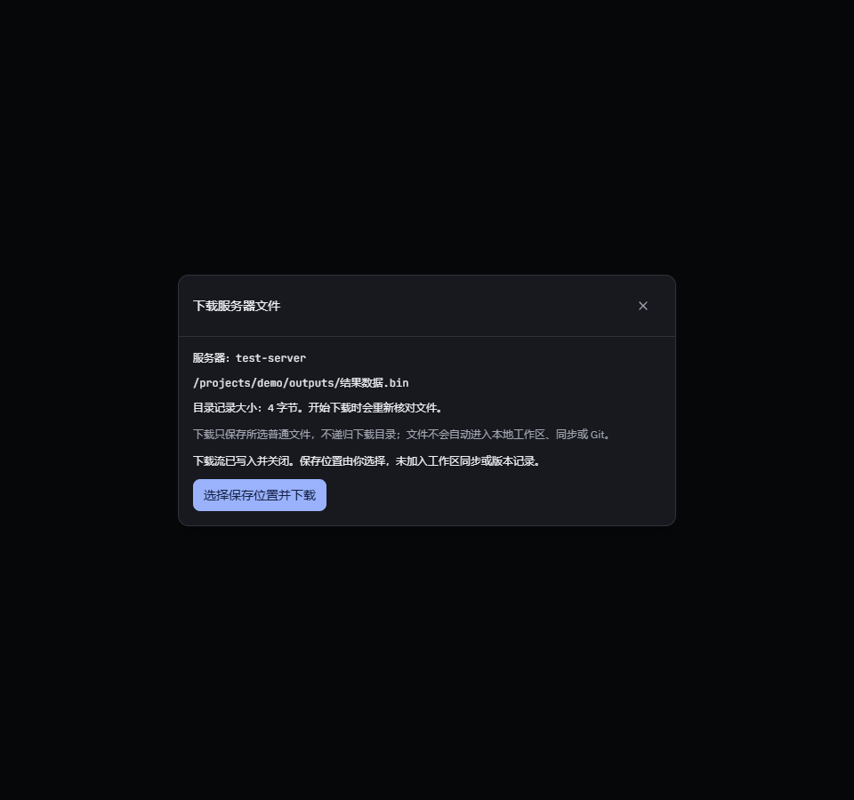

下载界面检查 · 2026-10-07
实际 Edge 154.0.4258.53，加载当前组件与实际样式。无保存 API 的三种宽度均无横向溢出、无备用入口或正文请求；受控保存句柄只有关闭成功后显示完成，选择器取消不请求正文，页面无脚本错误。
范围：网页 DOM、布局和受控保存行为。不是 OS 系统选择器实测，也不代表真实 SSH 下载验收。




实际 Edge 154.0.4258.53，加载当前组件与实际样式。无保存 API 的三种宽度均无横向溢出、无备用入口或正文请求；受控保存句柄只有关闭成功后显示完成，选择器取消不请求正文，页面无脚本错误。
范围：网页 DOM、布局和受控保存行为。不是 OS 系统选择器实测，也不代表真实 SSH 下载验收。



